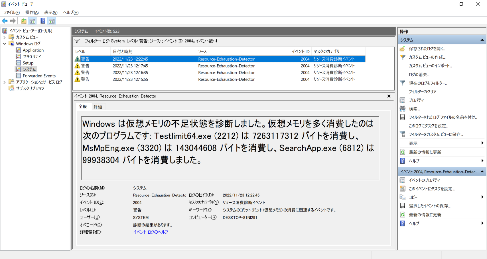
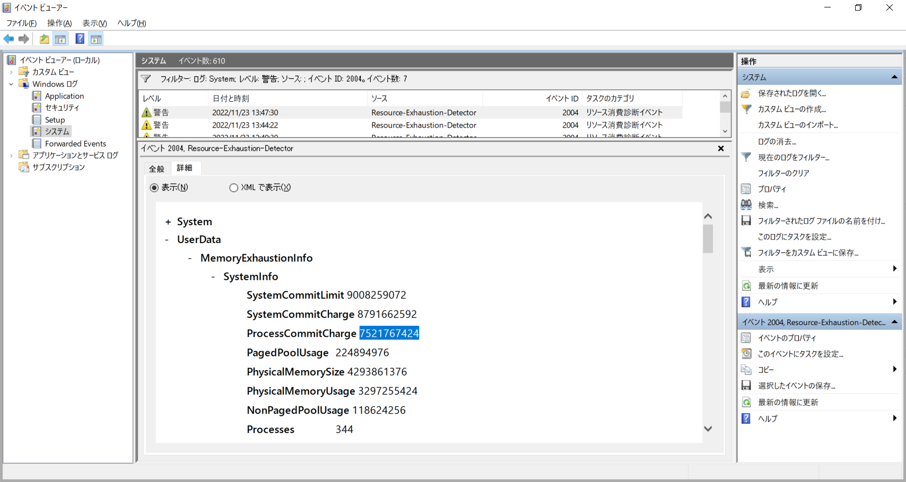
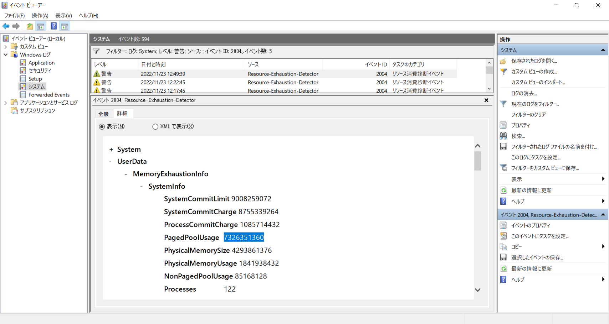
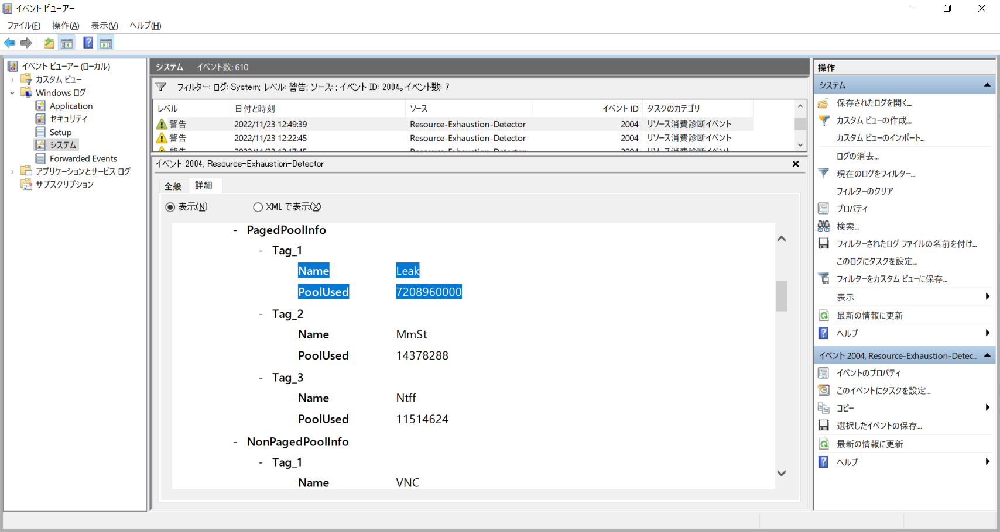
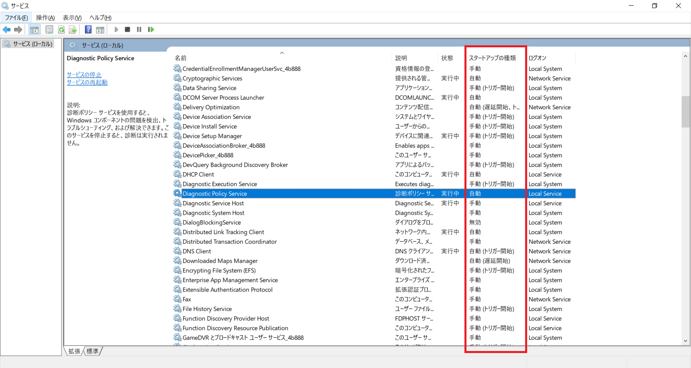

本記事はマイクロソフト社員によって公開されております。
こんにちは、Windows サポートチームの栗木です。
本記事では、仮想メモリ不足が発生した際にシステムのイベント ログにソース：Microsoft-Windows-Resource-Exhaustion-DetectorWindows、イベント ID：2004 で記録される警告イベントの確認方法および対応方法をご紹介いたします。
このイベント ログから、イベント ログが記録された時間の仮想メモリの使用状況が確認できます。ただ、このイベント ログからは仮想メモリの使用量以外は確認できないため、なぜ仮想メモリの使用量が増加したのかは、追加で調査が必要になります。
なお、仮想メモリ不足と判定されイベント ログが記録される閾値は公開されておりません。大まかな値が知りたい場合は Testlimit ツールで、仮想メモリを連続的に確保することにより、仮想メモリ不足を発生させ、イベント ログが記録されるタイミングを確認してみてください。
1 | # 100MB の仮想メモリを１秒ごとに連続確保 |
以下の説明では、Sysinternals の Testlimit ツール または NotMyFault ツール を用いて、意図的に仮想メモリ不足を起こしております。テスト環境は Windows 10 22H2、仮想メモリ 8592 MB (物理メモリ 4096 MB + ページ ファイル 4496 MB) を使用しております。
適用対象の OS
- すべての Windows OS
イベントが記録される状況
Case 1. 単一のプロセスによる仮想メモリ使用量が大きい
イベント メッセージには、仮想メモリの使用量が大きい上位３位までのプロセス名が大きい順に表示されます。以下の例では Testlimit64.exe が 7263117312 バイト (約6.7GB) 使用しており、このプロセスが仮想メモリ不足を引き起こしていると判断ができます。
イベント メッセージに表示されているプロセスの仮想メモリ使用量が大きくない場合は、次の Case 2 または Case 3 に該当している可能性がございます。
イベント メッセージの例：
Windows は仮想メモリの不足状態を診断しました。仮想メモリを多く消費したのは次のプログラムです: Testlimit64.exe (2212) は 7263117312 バイトを消費し、MsMpEng.exe (3320) は 143044608 バイトを消費し、SearchApp.exe (6812) は 99938304 バイトを消費しました。

Case 2. 複数のプロセスによる仮想メモリ使用量が大きい
イベント メッセージに表示されているプロセスの仮想メモリ使用量が大きくない場合は、全般タブから詳細タブに切り替え ProcessCommitCharge の値を確認します。以下の例では、ProcessCommitCharge が 7521767424 バイト (約7.0GB) となっており、複数のプロセスにより仮想メモリ不足が発生しています。これは Figure 2.2 のように、複数のプロセスで少量のずつ使用している状況が考えられます。
ProcessCommitCharge が特に大きくない場合は、Case 3 に該当している可能性がございます。

Case 3. システム領域の仮想メモリ使用量が大きい
Case 1、2 に該当していない場合は、システム領域の仮想メモリ使用量が増加している可能性がございますので、詳細タブで PagedPoolUsage、NonPagedPoolUseage を確認します。以下の例では、PagedPoolUsage が 7326351360 バイト (約6.8GB) となっており、ページ プールが仮想メモリ不足を引き起こしています。さらに下へスクロールし、PagedPoolInfo を確認すると “Leak” というプール タグで仮想メモリが使用されていることが確認できます。


対応方法
イベント ログからは、仮想メモリの使用量以外は確認できないので、なぜ仮想メモリの使用量が増加したのかは、追加で資料採取をして調査が必要になります。調査方法としては、パフォーマンス ログを日ごろから収集し、事象が発生した時間帯のログを解析する方法が考えられます。
パフォーマンス ログ収集
https://jpwinsup.github.io/blog/2021/06/07/Performance/SystemResource/PerformanceLogging/
メモリ使用量を確認する際に見るべきパフォーマンス カウンター
https://jpwinsup.github.io/blog/2021/10/26/Performance/SystemResource/PerformanceCounterMemory/
加えて、Case 3 の場合には、Windows Performance Recorder: WPR ツールでプール使用量が増えている期間の資料を採取し、Windows Performance Analyzer: WPA ツールで解析する調査方法が考えられます。なお、WPR は、Windows 10、Windows Server 2016以降 では、OSに標準でインストールされています。
注意点
仮想メモリ不足が発生した際にイベント ログが記録される機能は、以下のサービスに依存しており、サービスの「スタートアップの種類」が無効に設定されている場合は、イベント ログが記録されません。ただ、これらのサービスは、デフォルトで無効には設定されておりませんので、通常は問題にはなりません。
Diagnostic Policy Service (DPS、診断ポリシーサービス)：
診断ポリシー サービスを使用すると、Windows コンポーネントの問題を検出、トラブルシューティング、および解決できます。このサービスを停止すると、診断は実行されません。Diagnostic System Host (WdiSystemHost)：
Diagnostic System Host は、ローカル システム コンテキストでの実行が必要な診断をホストするために、診断ポリシー サービスによって使用されます。このサービスを停止すると、このサービスに依存する診断はすべて機能しなくなります。
各サービスの「スタートアップの種類」の設定は、サービス アプリから確認ができます。

参考 URL
- Testlimit
- NotMyFault
- An Introduction to Pool Tags
- システム領域
- Windows Performance Recorder
- Windows Performance Analyzer
変更履歴
- 2022/12/9 : 本 Blog の公開